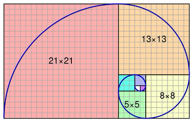

已知歌曲
已知歌曲
Dantalion
CHAOS
Testify
TRPNO
Redolent Shape
Lament Rain
Next to you
SOUNDWITCH
Cyaegha
DDD
Mirzam
Arghena
Phantasia
Qovat
Oblivia
Vexaira
Manic Jeer
TeraVolt
IZANA
Nhelv
Teriqma
Magnolia
Halcyon
Nirv lucE
MIRINAE
谜题A
谜题A
三条碰 弃五筒
二条 杠二万 弃五条
五万杠 弃一万
碰三万
七条
五条六条吃 弃四万
一万
杠四条 弃两条
五筒 碰五万.
谜题B
谜题B
水天一色,空中的半径却不再围绕着圆旋转
云彩勾勒出美妙的弧线,它们移动,它们变幻.
rmqrbr

谜题C
谜题C
找到一切的开始.
**st eert*on
een n un
UD
**rtfct
te
已开:s t e r o n u d e f c
谜题D
谜题D
也许世界上曾存在着一片乐土,后来的破面告诉原来的人们:这个世界从来都不平等,也不允许光芒存在.
2LightvfrGShedwHCdrSYYvSheSwsyZ7HKwoN26Mf7YbZLexbiHXWkJpwdnqAnVTQjmuuLAyD2Ukinir2MB3Kie3ijy78AdLJjWmKNK3bnNVYL3kJJ4qrxYKdVG11m6DEEtL3wE6XbuxzuedFgGx9oUS3XSQjQmnqQBLPWzXAaMBfGFNjfkcawZRyncbBK7yEwoRGNFjctUnaDS3W5uTtoWWEdBhj6zki53hY7bnnCBdmUG1i5bGK4DQpppvgLtgZ8ddN3NDuvFSScgpecUYkyC9==
找到那片乐土.